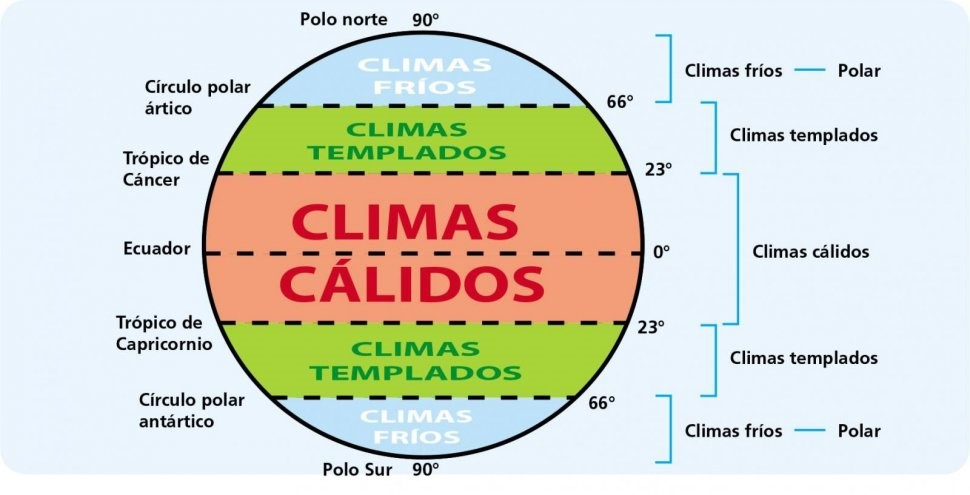
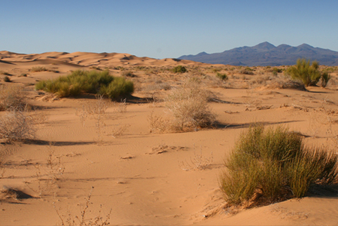
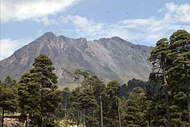

México cuenta con una gran diversidad de climas que, de manera muy general,
pueden clasificarse, según su temperatura, en cálido y templado.
De acuerdo con la humedad, en húmedo, subhúmedo y muy seco.

El clima seco se encuentra en la mayor parte del centro y norte del país,región que comprende el
28.3% del territorio nacional. Se caracteriza por la circulación de los vientos, lo cual provoca
escasa nubosidad y precipitaciones de 300 a 600 mm. anuales, con temperaturas en promedio de 22°
a 26° C en algunas regiones y en otras de 18° a 22° C.

El clima muy seco registra temperaturas promedio de 18° a 22° C, con casos extremos de más de 26°C;
presentando precipitaciones anuales de 100 a 300 mm en promedio, se encuentra en el 20.8% del país.
En relación al clima cálido, se subdivide en cálido húmedo y cálido subhúmedo. El primero de ellos
ocupa el 4.7% del territorio nacional y se caracteriza por tener una temperatura media anual entre
22° y 26°C. Las precipitaciones de están entre 2.000 a 4.000 mm anuales.

Por su parte, el clima cálido subhúmedo se encuentra en el 23% del país; en él se registran
precipitaciones entre 1,000 y 2,000 mm anuales y temperaturas que oscilan de 22° y 26°, con regiones en donde superan los 26°C.